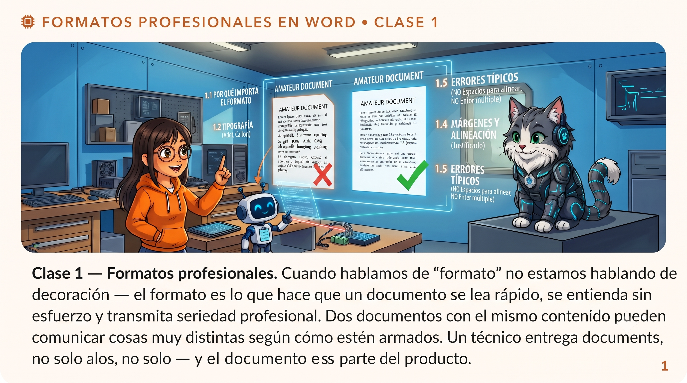
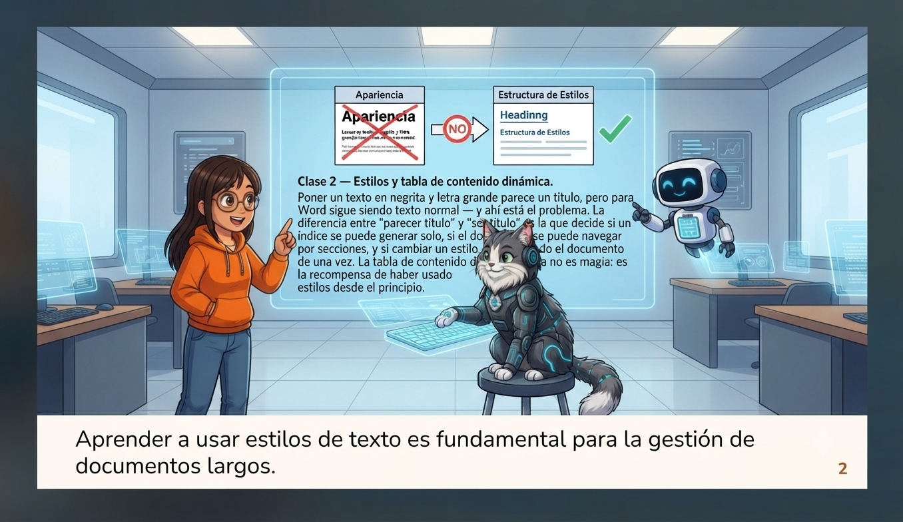
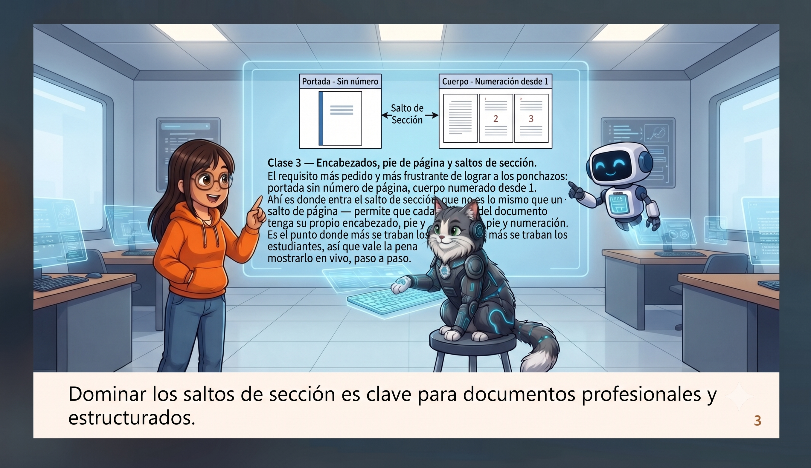
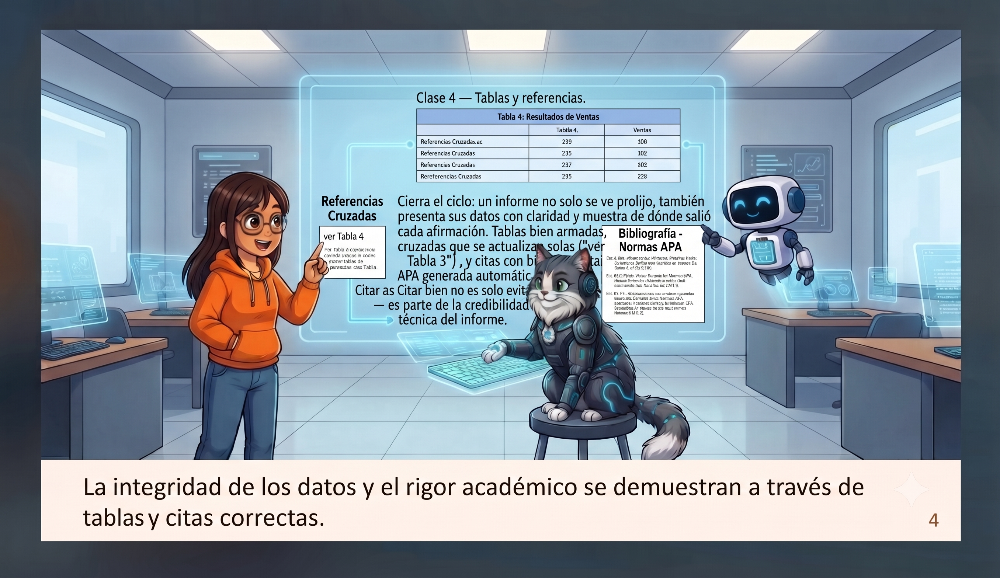
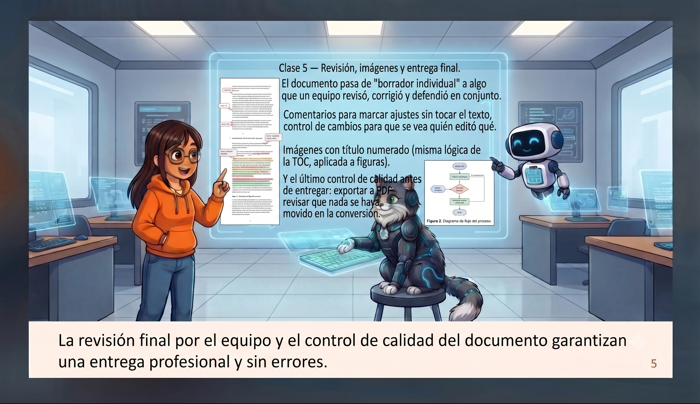

Formatos profesionales
Cuando hablamos de "formato" no estamos hablando de decoración — el formato es lo que hace que un documento se lea rápido, se entienda sin esfuerzo y transmita seriedad profesional. Dos documentos con el mismo contenido pueden comunicar cosas muy distintas según cómo estén armados.
Fuente única (o máximo dos: una para títulos, otra para cuerpo), tamaño de 11-12 pt para el cuerpo, interlineado de 1.15 a 1.5, márgenes estándar y alineación con propósito. La negrita y la cursiva se usan para destacar, no para decorar — si todo está en negrita, nada resalta.

Estilos y tabla de contenido dinámica
Poner un texto en negrita y letra grande parece un título, pero para Word sigue siendo texto normal — y ahí está el problema. Sin un estilo real no se puede generar un índice automático, ni navegar el documento por secciones, ni cambiar todos los títulos a la vez.
Un estilo es una etiqueta semántica: "esto es un Título 1", no "esto es Calibri 16 negrita azul". Word ya trae una jerarquía predefinida (Título 1 → Título 2 → Título 3 → Normal) — y saltearse niveles rompe la lógica del documento y del índice.

Encabezados, pie de página y saltos de sección
El requisito más pedido y más frustrante de lograr a los ponchazos: portada sin número de página, cuerpo numerado desde 1. Ahí es donde entra el salto de sección, que no es lo mismo que un salto de página — permite que cada parte del documento tenga su propio encabezado, pie y numeración.

- 01Insertar un salto de sección (página siguiente) al final de la portada.
- 02En el pie de página del cuerpo, desvincular de la sección anterior — si no, cualquier cambio se propaga a ambas.
- 03Configurar el número de página de esa sección para que empiece en 1.
Tablas y referencias
Cierra el ciclo: un informe no solo se ve prolijo, también presenta sus datos con claridad y muestra de dónde salió cada afirmación. Encabezado de columna diferenciado, fila de encabezado repetida si la tabla cruza de página, números alineados a la derecha.
Las referencias cruzadas permiten que el texto diga "ver Tabla 3" con un vínculo que se actualiza solo si la numeración cambia. Y el gestor de citas de Word arma la bibliografía en Normas APA automáticamente, ordenada y lista para actualizarse si se agregan nuevas fuentes.

Revisión, imágenes y entrega final
El documento pasa de "borrador individual" a algo que un equipo revisó, corrigió y defendió en conjunto. Los comentarios (Revisar → Nuevo comentario) marcan ajustes sin tocar el texto; el control de cambios registra quién editó qué, con la posibilidad de aceptar o rechazar cada edición.
Las imágenes también necesitan título numerado ("Figura 1", "Figura 2...") — la misma lógica de la tabla de contenido, aplicada a figuras. Y antes de entregar: exportar a PDF y revisar que nada se haya movido en la conversión.


Con el documento estructurado, el siguiente paso es comunicarlo — cómo convertir este mismo informe en una presentación que se defienda en vivo.